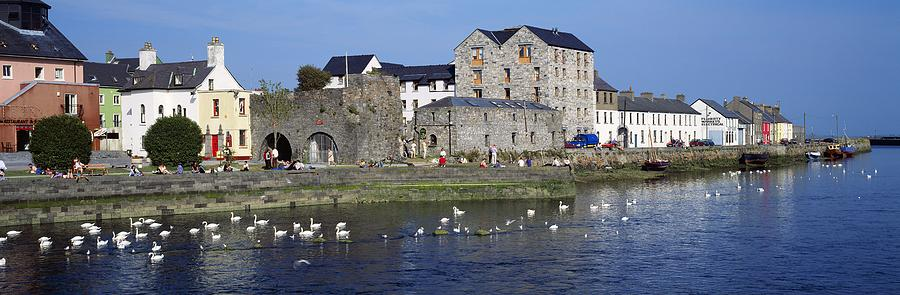
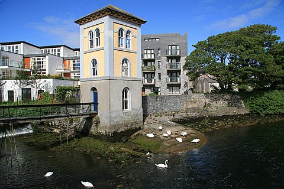
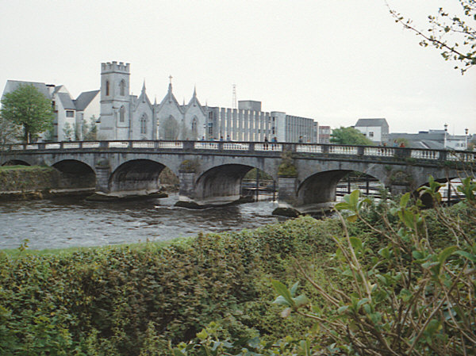
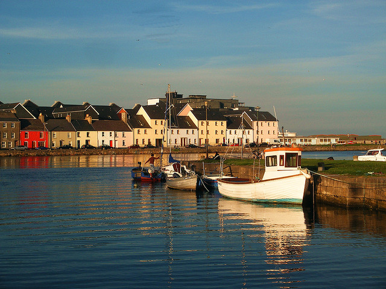
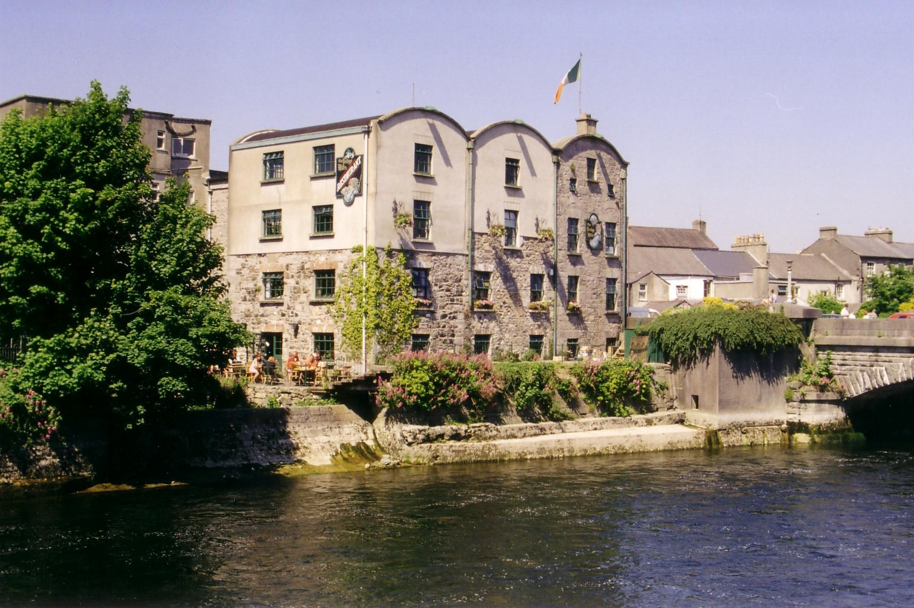

<ion-content class="">
<div class="list">

    <div class="item item-thumbnail-left item-text-wrap" href="#">
      
      <h2>Galway Cathederal</h2>
      <p>The Cathedral of Our Lady Assumed into Heaven and St Nicholas, commonly known as Galway Cathedral, is a Roman Catholic cathedral in Galway, Ireland, and is one of the largest and most impressive buildings in the city</p>
    </div>
    <div class="item item-thumbnail-left item-text-wrap" href="#">
      
      <h2>Galway Museum</h2>
      <p>The Galway City Museum is a museum in Galway City, County Galway, Ireland. It was founded on 29 July 2006, and is located beside the Spanish Arch.</p>
    </div>
   <div class="item item-thumbnail-left item-text-wrap" href="#">
      
      <h2>Spanish Arch</h2>
      <p>The Spanish Arch in Galway city, Ireland, was originally an extension of the city wall from Martin's Tower to the bank of the Corrib, as a measure to protect the city's quays, which were located in the area once known as the Fish Market</p>
    </div>
    <div class="item item-thumbnail-left item-text-wrap" href="#">
      
      <h2>Fisheries Tower</h2>
      <p>The iconic tower located beside the Fishermans Wharf. Built in 1852 the Fishery Tower was
      originally a draft netting station and a look out tower. Recently it was used as a museum / exhibition space until the bridge became unsafe</p>
    </div>
   <div class="item item-thumbnail-left item-text-wrap" href="#">
      
      <h2>Salmon Weir Bridge</h2>
      <p>The Salmon Weir Bridge crosses the Corrib from the Cathedral on one side to the courthouse on the other. Many people gather on this bridge in summer to see the shoals of salmon make their way up the Corrib river to spawn. During the salmon season, people stop to watch anglers fishing in the waters below, applauding each catch. There is a magnificent view of the Cathedral from the bridge itself, and the view remains impressive all the way down to Wolfe Tone Bridge. The bridge was originally granted by Henry III to the Earl of Ulster. The Franciscans later held the fisheries until the suppression of the monasteries under Henry VIII, when they were given to the Lynch family. It is now the property of the state.</p>
    </div>
    <div class="item item-thumbnail-left item-text-wrap" href="#">
      
      <h2>The Claddagh</h2>
      <p>
      The name of the Claddagh area is based on the Irish word "cladach", meaning a stony beach. People have been gathering seafood and fishing from here for millennia. Historically, its existence has been recorded since the arrival of Christianity in the 5th century. Throughout the centuries, the Claddagh people kept Galway City supplied with fish, which they sold on the square in front of the Spanish Arch. The area has been immortalized through its traditional jewellery, the Claddagh Ring, which is worn by people all over the world.</p>
    </div>
    <div class="item item-thumbnail-left item-text-wrap" href="#">
    	
        <h2>The Bridge Mills</h2>
        <p>
      The Bridge Mills is a commanding building on the banks of the Corrib. Restored a few years ago with high regard for its aesthetic and historical features, the 430 year old Bridge Mills is now a centre of art, culture and specialised skillbased commercial projects within Galway City. Visitors and locals alike delight in the distinctive, finely crafted gifts, clothing, cuisine on offer.</p>
</div>
</ion-content>